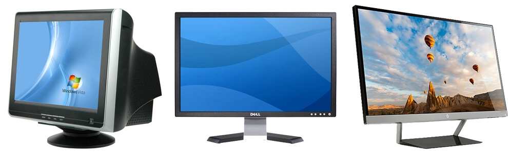

El monitor o también llamado pantalla, monitor de ordenador y monitor de computadora, es el principal dispositivo de salida, que muestra datos o información a todos los usuarios. También puede considerarse un periférico de entrada/salida si el monitor contiene pantalla táctil o multitáctil.
